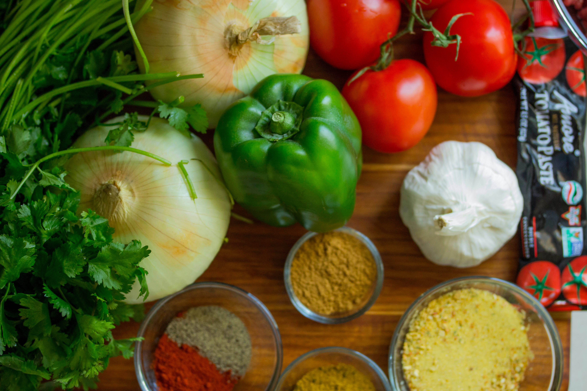

I like to read books. Whenever I feel like I need to destress,
I go to books. Books provide us with the many posibilities in the world
where you could live out situations that you may never encounter. This is what
makes reading so interesting to me.

I love to cook. While cooking I am able to remove all worries and just focus on the food that I am making. The pleasure you get when people enjoy your food makes cooking even more rewarding.

I love to listen to music because it makes me connect with my emotions. There are songs for any type of mood from happiness to sadness to excitement. Music is also a source of enjoyment and relaxation for me.